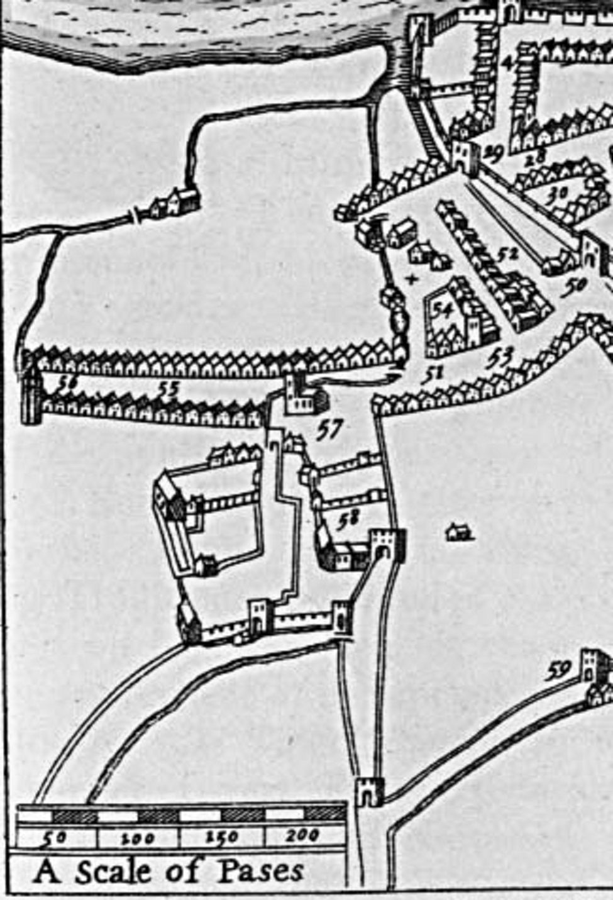

Stop 9 of 16 · Sundrive Road, Kimmage
The Stone Boat
The medieval stone that splits the river two to one.
The Stone Boat
Just east of Sundrive Road, a stone shaped like the bow of a boat divides the river. The first was built in 1245, when the Norman city of Dublin was short of water. It was rebuilt in 1555, and the stone you see today is a modern replacement on the same design.
The canons of St Thomas’s Abbey carried out extensive works to bring water to their abbey and the city. These works took water from the Dodder at Balrothery to Kimmage, where it joined the Poddle. Here the stone tongue, known locally as the Stone Boat, split the flow two to one: two thirds stayed in the Poddle, and one third went into the City Watercourse.
St Thomas’s Abbey
The City Watercourse, an artificial channel, carried its third of the water north-west towards Dolphin’s Barn. Near today’s Basin Lane it turned east along the south side of James’s Street and through Thomas Street into the city.
The Augustinian Abbey of St Thomas the Martyr lay outside the medieval walls, in the western suburbs just off modern Thomas Street. It was founded in 1177 by William FitzAldelm, custos of Ireland, on behalf of King Henry II, and followed the Victorine rule, like St Augustine’s Abbey in Bristol, so its first canons probably came from Bristol. No trace of the abbey survives.

